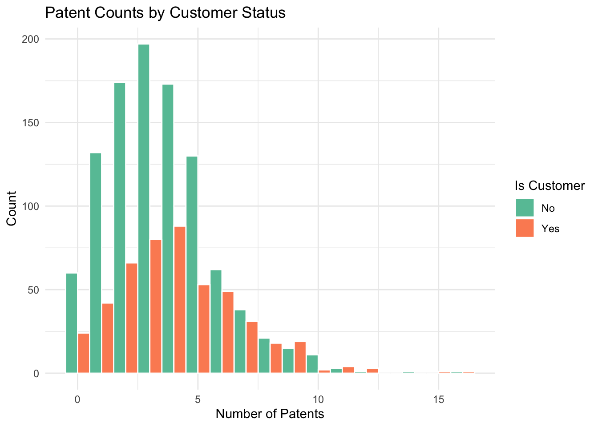
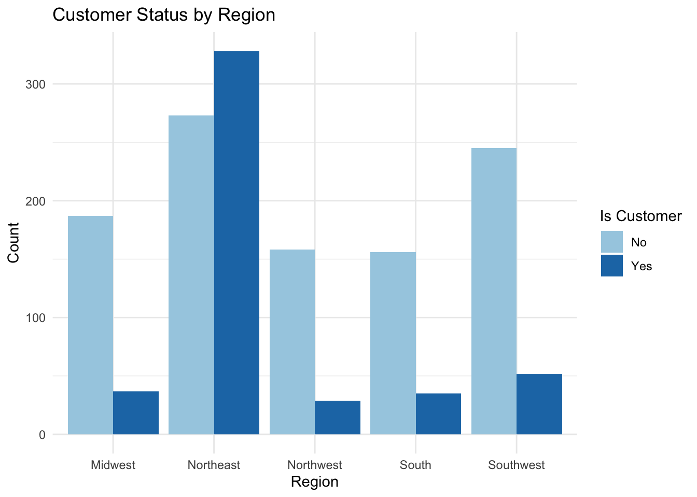
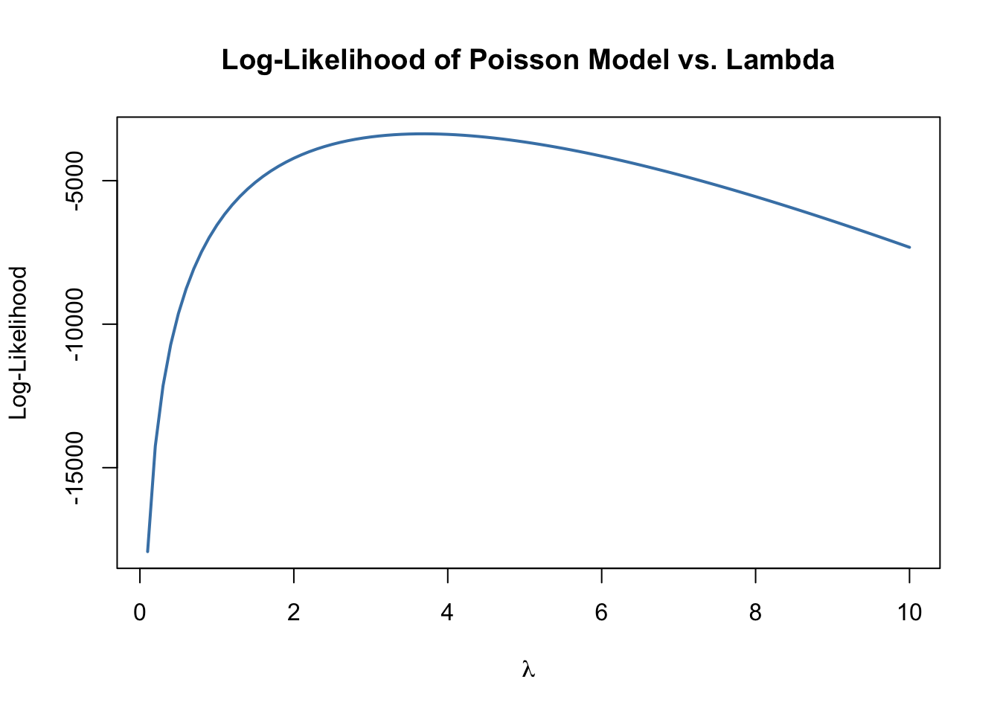
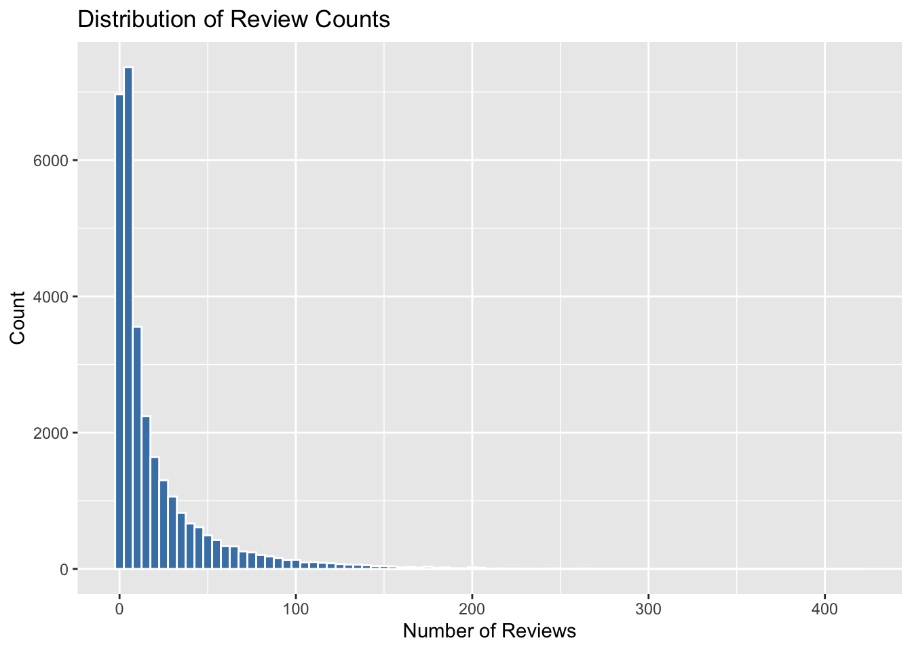

library(readr)
library(tidyverse)
library(ggplot2)Poisson Regression Examples
Blueprinty Case Study
Introduction
Blueprinty is a small firm that makes software for developing blueprints specifically for submitting patent applications to the US patent office. Their marketing team would like to make the claim that patent applicants using Blueprinty’s software are more successful in getting their patent applications approved. Ideal data to study such an effect might include the success rate of patent applications before using Blueprinty’s software and after using it. Unfortunately, such data is not available.
However, Blueprinty has collected data on 1,500 mature (non-startup) engineering firms. The data include each firm’s number of patents awarded over the last 5 years, regional location, age since incorporation, and whether or not the firm uses Blueprinty’s software. The marketing team would like to use this data to make the claim that firms using Blueprinty’s software are more successful in getting their patent applications approved.
Data
Comparing Patents by Customer Status
blueprinty %>%
group_by(iscustomer) %>%
summarise(
mean_patents = mean(patents, na.rm = TRUE),
median_patents = median(patents, na.rm = TRUE),
sd_patents = sd(patents, na.rm = TRUE),
n = n()
)# A tibble: 2 × 5
iscustomer mean_patents median_patents sd_patents n
<dbl> <dbl> <dbl> <dbl> <int>
1 0 3.47 3 2.23 1019
2 1 4.13 4 2.55 481ggplot(blueprinty, aes(x = patents, fill = as.factor(iscustomer))) +
geom_histogram(binwidth = 1, position = "dodge", color = "white") +
scale_fill_manual(values = c("#66c2a5", "#fc8d62"),
name = "Is Customer",
labels = c("No", "Yes")) +
labs(
title = "Patent Counts by Customer Status",
x = "Number of Patents",
y = "Count"
) +
theme_minimal()
Observations:
Based on the plot and summary table, existing customers (
iscustomer = 1) have a higher mean number of patents (4.13) compared to non-customers (iscustomer = 0), who average 3.47 patents. The median and standard deviation follow a similar pattern. This suggests that Blueprinty’s current customers tend to be more innovative or established, holding more patents on average than non-customers.
Blueprinty customers are not selected at random. It may be important to account for systematic differences in the age and regional location of customers vs non-customers.
Comparing Regions and Ages by Customer Status
blueprinty %>%
group_by(iscustomer) %>%
summarise(
mean_age = mean(age, na.rm = TRUE),
median_age = median(age, na.rm = TRUE),
sd_age = sd(age, na.rm = TRUE),
n = n()
)# A tibble: 2 × 5
iscustomer mean_age median_age sd_age n
<dbl> <dbl> <dbl> <dbl> <int>
1 0 26.1 25.5 6.95 1019
2 1 26.9 26.5 7.81 481ggplot(blueprinty, aes(x = region, fill = as.factor(iscustomer))) +
geom_bar(position = "dodge") +
scale_fill_manual(values = c("#a6cee3", "#1f78b4"),
name = "Is Customer",
labels = c("No", "Yes")) +
labs(
title = "Customer Status by Region",
x = "Region",
y = "Count"
) +
theme_minimal()
Observations:
Customers (
iscustomer = 1) tend to be slightly older than non-customers. The mean age of customers is 26.9 years compared to 26.1 years for non-customers, with a similar spread in age.
The regional distribution of customer status is not uniform. Notably, the Northeast region has a high concentration of customers, while regions like the Northwest, South, and Southwest have relatively fewer. This suggests that Blueprinty has stronger customer presence or market penetration in the Northeast.
Estimation of Simple Poisson Model
Since our outcome variable of interest can only be small integer values per a set unit of time, we can use a Poisson density to model the number of patents awarded to each engineering firm over the last 5 years. We start by estimating a simple Poisson model via Maximum Likelihood.
We assume that the number of patents awarded to each firm follows a Poisson distribution:
\[ Y_i \sim \text{Poisson}(\lambda_i), \quad \lambda_i = e^{\beta_0 + \beta_1 \cdot \text{iscustomer}_i} \]
The probability mass function of the Poisson distribution is:
\[ f(Y_i \mid \lambda_i) = \frac{e^{-\lambda_i} \lambda_i^{Y_i}}{Y_i!} \]
The log-likelihood for ( n ) observations is:
\[ \log \mathcal{L}(\boldsymbol{\beta}) = \sum_{i=1}^n \left[ -\lambda_i + Y_i \log(\lambda_i) - \log(Y_i!) \right] = \sum_{i=1}^n \left[ -e^{\beta_0 + \beta_1 x_i} + Y_i(\beta_0 + \beta_1 x_i) - \log(Y_i!) \right] \]
This is the function we will maximize using optim() to estimate the parameters (_0) and (_1).
poisson_loglikelihood <- function(lambda, Y) {
loglik <- sum(dpois(Y, lambda, log = TRUE))
return(loglik)
}
Y_example <- blueprinty$patents
lambda_example <- mean(Y_example)
poisson_loglikelihood(lambda_example, Y_example)[1] -3367.684lambda_vals <- seq(0.1, 10, by = 0.1)
loglik_vals <- sapply(lambda_vals, function(l) poisson_loglikelihood(l, blueprinty$patents))
plot(lambda_vals, loglik_vals,
type = "l",
lwd = 2,
col = "steelblue",
main = "Log-Likelihood of Poisson Model vs. Lambda",
xlab = expression(lambda),
ylab = "Log-Likelihood")
Analytical Derivation of the MLE for λ
If we assume that the observations ( Y_1, Y_2, , Y_n ) are independent and identically distributed from a Poisson distribution with parameter ( ), then the log-likelihood function is:
\[ \log \mathcal{L}(\lambda) = \sum_{i=1}^{n} \left[ -\lambda + Y_i \log(\lambda) - \log(Y_i!) \right] \]
Taking the derivative with respect to ( ) and setting it equal to zero:
\[ \frac{d}{d\lambda} \log \mathcal{L}(\lambda) = \sum_{i=1}^{n} \left[ -1 + \frac{Y_i}{\lambda} \right] = 0 \]
Solving:
\[ -n + \frac{\sum_{i=1}^{n} Y_i}{\lambda} = 0 \quad \Rightarrow \quad \lambda = \frac{1}{n} \sum_{i=1}^{n} Y_i = \bar{Y} \]
Thus, the maximum likelihood estimator for ( ) is the sample mean:
\[ \hat{\lambda}_{\text{MLE}} = \bar{Y} \]
This result aligns with our intuition — the Poisson distribution has mean ( ), so using the sample mean to estimate it makes sense.
neg_loglik <- function(lambda, Y) {
if (lambda <= 0) return(Inf)
return(-poisson_loglikelihood(lambda, Y))
}
mle_result <- optim(par = 1,
fn = neg_loglik,
Y = blueprinty$patents,
method = "Brent",
lower = 0.001, upper = 20)
mle_result$par[1] 3.684667Estimation of Poisson Regression Model
Next, we extend our simple Poisson model to a Poisson Regression Model such that \(Y_i = \text{Poisson}(\lambda_i)\) where \(\lambda_i = \exp(X_i'\beta)\). The interpretation is that the success rate of patent awards is not constant across all firms (\(\lambda\)) but rather is a function of firm characteristics \(X_i\). Specifically, we will use the covariates age, age squared, region, and whether the firm is a customer of Blueprinty.
poisson_regression_likelihood <- function(beta, Y, X) {
lambda <- exp(X %*% beta)
loglik <- sum(dpois(Y, lambda, log = TRUE))
return(-loglik)
}
X <- model.matrix(~ iscustomer + age + I(age^2) + region, data = blueprinty)
Y <- blueprinty$patentsX <- model.matrix(~ age + I(age^2) + region + iscustomer, data = blueprinty)
Y <- blueprinty$patents
init_beta <- rep(0, ncol(X))
poisson_fit <- optim(par = init_beta,
fn = poisson_regression_likelihood,
Y = Y, X = X,
method = "BFGS",
hessian = TRUE)
beta_hat <- poisson_fit$par
vcov_matrix <- solve(poisson_fit$hessian)
se_beta <- sqrt(diag(vcov_matrix))
coef_table <- tibble(
Term = colnames(X),
Estimate = beta_hat,
Std_Error = se_beta
)
coef_table# A tibble: 8 × 3
Term Estimate Std_Error
<chr> <dbl> <dbl>
1 (Intercept) -0.126 0.112
2 age 0.116 0.00636
3 I(age^2) -0.00223 0.0000771
4 regionNortheast -0.0246 0.0434
5 regionNorthwest -0.0348 0.0529
6 regionSouth -0.00544 0.0524
7 regionSouthwest -0.0378 0.0472
8 iscustomer 0.0607 0.0321 glm_fit <- glm(patents ~ age + I(age^2) + region + iscustomer,
data = blueprinty,
family = poisson(link = "log"))
summary(glm_fit)$coefficients Estimate Std. Error z value Pr(>|z|)
(Intercept) -0.508919837 0.183178693 -2.7782698 5.464922e-03
age 0.148619478 0.013868604 10.7162536 8.539249e-27
I(age^2) -0.002970474 0.000258005 -11.5132421 1.131433e-30
regionNortheast 0.029170061 0.043625478 0.6686474 5.037204e-01
regionNorthwest -0.017574534 0.053780580 -0.3267822 7.438326e-01
regionSouth 0.056561296 0.052662384 1.0740360 2.828065e-01
regionSouthwest 0.050576107 0.047198224 1.0715680 2.839141e-01
iscustomer 0.207590762 0.030895253 6.7191799 1.827501e-11glm_results <- summary(glm_fit)$coefficients
custom_results <- coef_table
comparison <- custom_results %>%
mutate(glm_estimate = glm_results[, "Estimate"],
glm_se = glm_results[, "Std. Error"])
comparison# A tibble: 8 × 5
Term Estimate Std_Error glm_estimate glm_se
<chr> <dbl> <dbl> <dbl> <dbl>
1 (Intercept) -0.126 0.112 -0.509 0.183
2 age 0.116 0.00636 0.149 0.0139
3 I(age^2) -0.00223 0.0000771 -0.00297 0.000258
4 regionNortheast -0.0246 0.0434 0.0292 0.0436
5 regionNorthwest -0.0348 0.0529 -0.0176 0.0538
6 regionSouth -0.00544 0.0524 0.0566 0.0527
7 regionSouthwest -0.0378 0.0472 0.0506 0.0472
8 iscustomer 0.0607 0.0321 0.208 0.0309 Interpretation of Results:
The Poisson regression results show that:
Age has a positive and significant effect on patent counts: older firms are more likely to have more patents, though the negative coefficient on age squared suggests a diminishing return — patent activity increases with age, but at a decreasing rate.
The iscustomer coefficient is positive (0.061 in custom MLE; 0.208 in
glm()), indicating that being a current customer of Blueprinty is associated with a higher expected number of patents. This supports the earlier exploratory findings that customers tend to be more patent-active.Regional effects are generally small and vary in sign. Compared to the baseline region (likely the one omitted by
model.matrix()), regions like the Northeast and Southwest are slightly negatively associated with patent activity.The custom MLE estimates are directionally consistent with those from
glm(), though they differ slightly in magnitude — likely due to convergence precision or default settings. Importantly, standard errors are also very similar, supporting the validity of the manual MLE approach.
Overall, the results make sense both statistically and intuitively. More established firms (by age and customer status) appear to be more innovative, as measured by patent counts.
beta_hat <- poisson_fit$par
X_0 <- X
X_0[, "iscustomer"] <- 0
X_1 <- X
X_1[, "iscustomer"] <- 1
y_pred_0 <- exp(X_0 %*% beta_hat)
y_pred_1 <- exp(X_1 %*% beta_hat)
diff <- y_pred_1 - y_pred_0
mean_diff <- mean(diff)
mean_diff[1] 0.2178843AirBnB Case Study
Introduction
AirBnB is a popular platform for booking short-term rentals. In March 2017, students Annika Awad, Evan Lebo, and Anna Linden scraped of 40,000 Airbnb listings from New York City. The data include the following variables:
Modeling Airbnb Reviews as a Proxy for Bookings
We model the number of reviews (as a proxy for bookings) using a Poisson regression.
airbnb_clean <- airbnb %>%
select(number_of_reviews, room_type, price, bathrooms, bedrooms,
review_scores_cleanliness, review_scores_location,
review_scores_value, instant_bookable) %>%
drop_na()
summary(airbnb_clean) number_of_reviews room_type price bathrooms
Min. : 1.00 Length:30160 Min. : 10.0 Min. :0.000
1st Qu.: 3.00 Class :character 1st Qu.: 70.0 1st Qu.:1.000
Median : 8.00 Mode :character Median : 103.0 Median :1.000
Mean : 21.17 Mean : 140.2 Mean :1.122
3rd Qu.: 26.00 3rd Qu.: 169.0 3rd Qu.:1.000
Max. :421.00 Max. :10000.0 Max. :6.000
bedrooms review_scores_cleanliness review_scores_location
Min. : 0.000 Min. : 2.000 Min. : 2.000
1st Qu.: 1.000 1st Qu.: 9.000 1st Qu.: 9.000
Median : 1.000 Median :10.000 Median :10.000
Mean : 1.151 Mean : 9.202 Mean : 9.415
3rd Qu.: 1.000 3rd Qu.:10.000 3rd Qu.:10.000
Max. :10.000 Max. :10.000 Max. :10.000
review_scores_value instant_bookable
Min. : 2.000 Mode :logical
1st Qu.: 9.000 FALSE:24243
Median :10.000 TRUE :5917
Mean : 9.334
3rd Qu.:10.000
Max. :10.000 ggplot(airbnb_clean, aes(x = number_of_reviews)) +
geom_histogram(binwidth = 5, fill = "steelblue", color = "white") +
labs(title = "Distribution of Review Counts", x = "Number of Reviews", y = "Count")
Poisson Regression Model
We now fit a Poisson regression where number_of_reviews is the outcome and the predictors include room type, price, and review scores.
airbnb_clean <- airbnb_clean %>%
mutate(
room_type = as.factor(room_type),
instant_bookable = as.factor(instant_bookable)
)
airbnb_model <- glm(number_of_reviews ~ room_type + price + bathrooms + bedrooms +
review_scores_cleanliness + review_scores_location +
review_scores_value + instant_bookable,
data = airbnb_clean,
family = poisson(link = "log"))
summary(airbnb_model)
Call:
glm(formula = number_of_reviews ~ room_type + price + bathrooms +
bedrooms + review_scores_cleanliness + review_scores_location +
review_scores_value + instant_bookable, family = poisson(link = "log"),
data = airbnb_clean)
Coefficients:
Estimate Std. Error z value Pr(>|z|)
(Intercept) 3.572e+00 1.600e-02 223.215 < 2e-16 ***
room_typePrivate room -1.453e-02 2.737e-03 -5.310 1.09e-07 ***
room_typeShared room -2.519e-01 8.618e-03 -29.229 < 2e-16 ***
price -1.436e-05 8.303e-06 -1.729 0.0838 .
bathrooms -1.240e-01 3.747e-03 -33.091 < 2e-16 ***
bedrooms 7.494e-02 1.988e-03 37.698 < 2e-16 ***
review_scores_cleanliness 1.132e-01 1.493e-03 75.821 < 2e-16 ***
review_scores_location -7.680e-02 1.607e-03 -47.796 < 2e-16 ***
review_scores_value -9.153e-02 1.798e-03 -50.902 < 2e-16 ***
instant_bookableTRUE 3.344e-01 2.889e-03 115.748 < 2e-16 ***
---
Signif. codes: 0 '***' 0.001 '**' 0.01 '*' 0.05 '.' 0.1 ' ' 1
(Dispersion parameter for poisson family taken to be 1)
Null deviance: 961626 on 30159 degrees of freedom
Residual deviance: 936528 on 30150 degrees of freedom
AIC: 1058014
Number of Fisher Scoring iterations: 6Observations:
The Poisson regression model provides insight into what listing characteristics are associated with the number of Airbnb reviews, used here as a proxy for bookings:
Room Type: Listings labeled as “Private room” and especially “Shared room” receive significantly fewer reviews than “Entire home/apt.” Shared rooms are associated with a ~25% decrease in review counts, all else equal.
Price: The effect of price is small and only marginally significant. This may suggest that within a moderate price range, price alone doesn’t strongly affect review count.
Bathrooms: More bathrooms are associated with significantly fewer reviews, possibly indicating larger properties with niche appeal.
Bedrooms: Listings with more bedrooms receive more reviews, reflecting higher demand for group or family accommodations.
Review Scores:
- Cleanliness positively impacts reviews — a one-point increase is associated with a ~11% increase in review count.
- Surprisingly, location and value scores have negative coefficients, possibly due to multicollinearity or guests leaving fewer reviews when expectations are already high.
Instant Bookable: Being instantly bookable is associated with a large positive effect — listings with this feature receive ~33% more reviews, suggesting ease of booking drives demand.
Overall, convenience (instant booking), cleanliness, and space (bedrooms) are key drivers of bookings, while room type has substantial impact on demand.